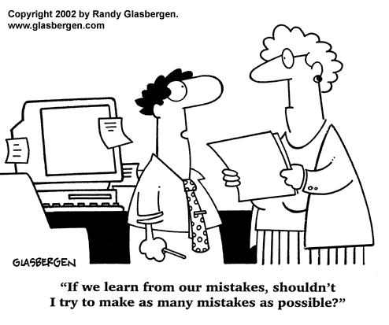
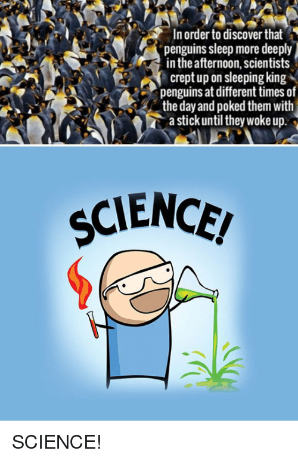
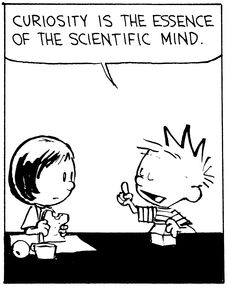
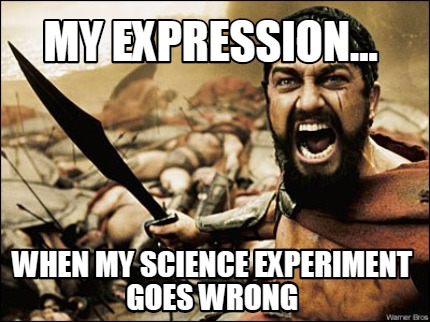
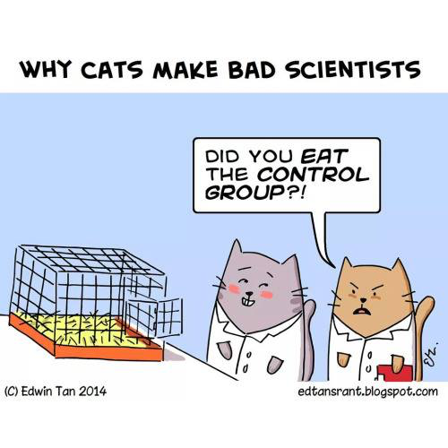

APSci Independent Scientific Research Project and Experiment
In APSci this year, each student will design and execute an independent scientific research project and corresponding science experiment.
The project includes:
- writing a background research paper
- designing an experiment using the scientific method
- executing this experiment (setting up the experiment, collecting data, analyzing data and results, summarizing conclusions in a final report)
- creating a display board about the experiment
- presenting your project to the class
Here's what you will turn in as we go along:
| Week | Date | Due in class on this date: |
| 4 | Oct 2 | Decide on your Testable Question |
| 6 | Oct 16 | Background Research Report |
| 8 | Oct 30 | Written Plan of your Science Experiment |
| 10 | Nov 13 | Parent Signature for Science Experiment Plan |
| 14 | Jan 8 | (not due in class: but begin Science Experiment, collect/record data) |
| 16 | Jan 22 | Science Experiment data log (check in class) |
| 20 | February 26 | Experiment Data Log & completed Graphs |
| 22 | March 12 | Complete Experiment Binder (background report, data, lab report) |
| 25 | April 9 | Experiment Display Board & Oral Presentation |
Extra copies of class handouts:
Science Experiment Parent Approval Form
10 Steps for your Science Experiment
Optional but Helpful:
Science Fair Presentation Dos and Don’ts
Writing a Research Paper for Your Science Fair Project
This article from the Deseret Morning News is about a high school student who built a nuclear fusion reactor from scavenged parts.
How to design a Science Fair project:



